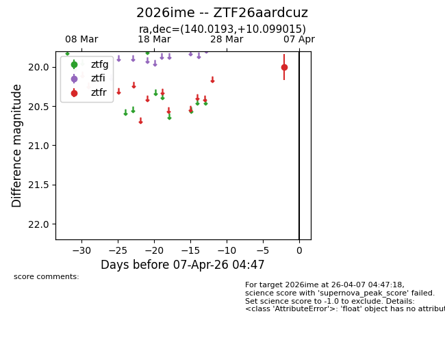
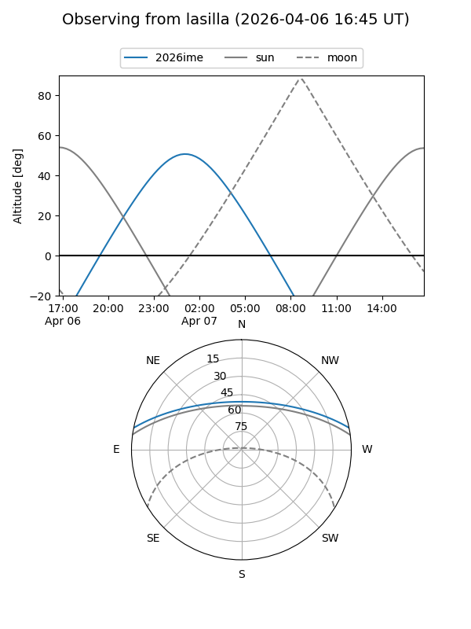
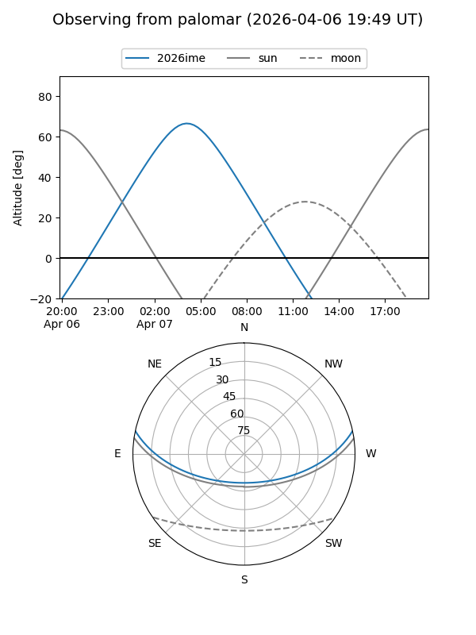
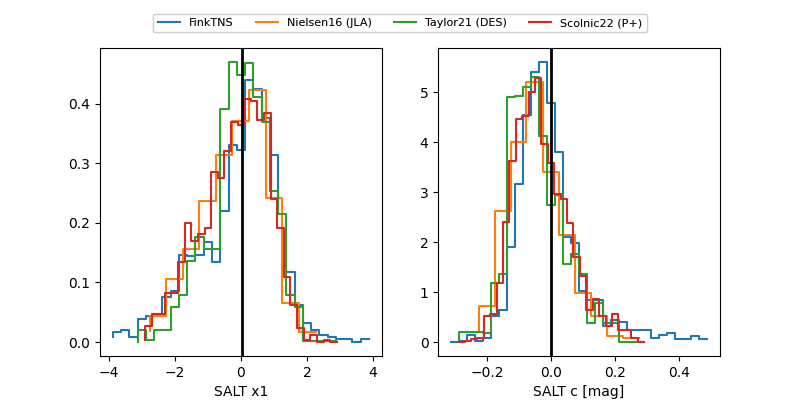

2026ime
Target 2026ime at 2026-04-07 04:51
Aliases and brokers:
FINK: link
Lasair: link
ALeRCE: link
TNS: link
YSE: link
alt names
ZTF26aardcuz (ztf,fink_ztf)
2026ime (tns,yse)
Coordinates:
equatorial (ra, dec) = 140.0193,+10.09901
equatorial (HMS+DMS) = 09:20:04.62,+10:05:56.45
galactic (l, b) = (221.2780,+37.53281)
Flags:
Photometry:
last ztfr=20.00
1 ztfr detections
Lightcurve

Visibility


Additional plots
